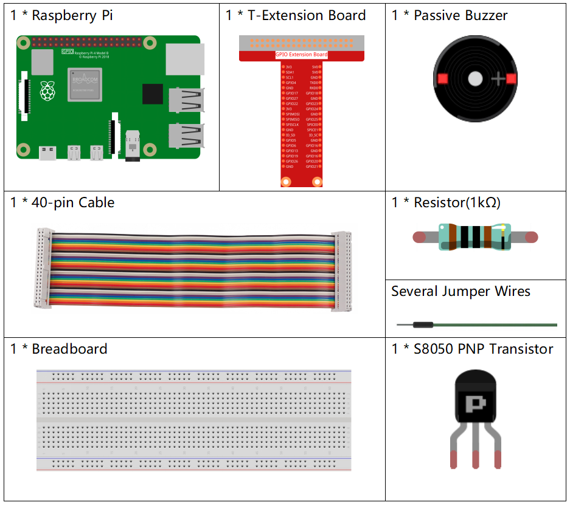

Nota
¡Hola! Bienvenido a la Comunidad de Entusiastas de SunFounder para Raspberry Pi, Arduino y ESP32 en Facebook. Sumérgete en el mundo de Raspberry Pi, Arduino y ESP32 junto a otros entusiastas.
¿Por qué unirse?
Soporte Experto: Resuelve problemas postventa y desafíos técnicos con la ayuda de nuestra comunidad y equipo.
Aprende y Comparte: Intercambia consejos y tutoriales para mejorar tus habilidades.
Avances Exclusivos: Accede anticipadamente a anuncios de nuevos productos y adelantos exclusivos.
Descuentos Especiales: Aprovecha descuentos exclusivos en nuestros productos más recientes.
Promociones Festivas y Sorteos: Participa en sorteos y promociones especiales.
👉 ¿Listo para explorar y crear con nosotros? Haz clic en [Aquí] y únete hoy mismo.
1.2.2 Zumbador Pasivo
Introducción
En este proyecto, aprenderemos a hacer que un zumbador pasivo reproduzca música.
Componentes Necesarios
Para este proyecto, necesitamos los siguientes componentes.
Diagrama de Conexiones
En este experimento, se utiliza un zumbador pasivo, un transistor PNP y una resistencia de 1k entre la base del transistor y el GPIO para proteger el transistor.
Al suministrar diferentes frecuencias al GPIO17, el zumbador pasivo emitirá sonidos de distintas tonalidades; de esta forma, el zumbador puede reproducir música.
T-Board Name |
physical |
wiringPi |
BCM |
GPIO17 |
Pin 11 |
0 |
17 |

Procedimientos del Experimento
Paso 1: Construye el circuito. (El zumbador pasivo tiene una placa verde en la parte trasera).

Paso 2: Cambia al directorio correspondiente.
cd ~/davinci-kit-for-raspberry-pi/python-pi5
Paso 3: Ejecuta el código.
sudo python3 1.2.2_PassiveBuzzer.py
Tras ejecutar el código, el zumbador reproducirá una melodía.
Advertencia
Si aparece el mensaje de error RuntimeError: Cannot determine SOC peripheral base address, consulta Si gpiozero no funciona.
Código
Nota
Puedes Modificar/Restablecer/Copiar/Ejecutar/Detener el código a continuación. Antes de eso, asegúrate de estar en la ruta del código fuente, como davinci-kit-for-raspberry-pi/python-pi5. Después de modificar el código, puedes ejecutarlo directamente para ver el efecto.
#!/usr/bin/env python3
from gpiozero import TonalBuzzer
from time import sleep
# Inicializa un TonalBuzzer conectado al pin GPIO 17
tb = TonalBuzzer(17) # Asegúrate de que este pin sea el correcto en tu configuración
def play(tune):
"""
Play a musical tune using the buzzer.
:param tune: List of tuples (note, duration), where each tuple represents a note and its duration.
"""
for note, duration in tune:
print(note) # Muestra en consola la nota actual
tb.play(note) # Reproduce la nota en el zumbador
sleep(float(duration)) # Pausa durante la duración de la nota
tb.stop() # Detiene el sonido al completar la melodía
# Define una melodía como una secuencia de notas y duraciones
tune = [('C#4', 0.2), ('D4', 0.2), (None, 0.2),
('Eb4', 0.2), ('E4', 0.2), (None, 0.6),
('F#4', 0.2), ('G4', 0.2), (None, 0.6),
('Eb4', 0.2), ('E4', 0.2), (None, 0.2),
('F#4', 0.2), ('G4', 0.2), (None, 0.2),
('C4', 0.2), ('B4', 0.2), (None, 0.2),
('F#4', 0.2), ('G4', 0.2), (None, 0.2),
('B4', 0.2), ('Bb4', 0.5), (None, 0.6),
('A4', 0.2), ('G4', 0.2), ('E4', 0.2),
('D4', 0.2), ('E4', 0.2)]
try:
play(tune) # Ejecuta la función play para comenzar la melodía
except KeyboardInterrupt:
# Maneja la interrupción de teclado para una terminación limpia
pass
Explicación del Código
Estas líneas importan la clase
TonalBuzzerde la libreríagpiozeropara controlar el zumbador y la funciónsleepdel módulotimepara crear pausas.#!/usr/bin/env python3 from gpiozero import TonalBuzzer from time import sleep
Esta línea inicializa un objeto
TonalBuzzeren el pin GPIO 17.# Inicializa un TonalBuzzer conectado al pin GPIO 17 tb = TonalBuzzer(17) # Asegúrate de que este pin sea el correcto en tu configuración
La función
playrecorre una lista de tuplas que representan notas musicales y sus duraciones. Cada nota se reproduce durante el tiempo especificado, y el zumbador se detiene después de completar la melodía.def play(tune): """ Play a musical tune using the buzzer. :param tune: List of tuples (note, duration), where each tuple represents a note and its duration. """ for note, duration in tune: print(note) # Muestra en consola la nota actual tb.play(note) # Reproduce la nota en el zumbador sleep(float(duration)) # Pausa durante la duración de la nota tb.stop() # Detiene el sonido al completar la melodía
La melodía se define como una secuencia de notas (frecuencia) y duraciones (segundos).
# Define una melodía como una secuencia de notas y duraciones tune = [('C#4', 0.2), ('D4', 0.2), (None, 0.2), ('Eb4', 0.2), ('E4', 0.2), (None, 0.6), ('F#4', 0.2), ('G4', 0.2), (None, 0.6), ('Eb4', 0.2), ('E4', 0.2), (None, 0.2), ('F#4', 0.2), ('G4', 0.2), (None, 0.2), ('C4', 0.2), ('B4', 0.2), (None, 0.2), ('F#4', 0.2), ('G4', 0.2), (None, 0.2), ('B4', 0.2), ('Bb4', 0.5), (None, 0.6), ('A4', 0.2), ('G4', 0.2), ('E4', 0.2), ('D4', 0.2), ('E4', 0.2)]
La función
play(tune)se llama dentro de un bloquetry. UnaKeyboardInterrupt(Ctrl+C) detendrá el programa de manera segura.try: play(tune) # Ejecuta la función play para comenzar la melodía except KeyboardInterrupt: # Maneja la interrupción de teclado para una terminación limpia pass